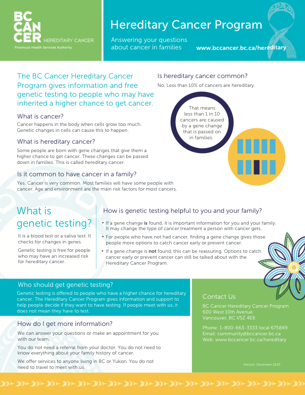
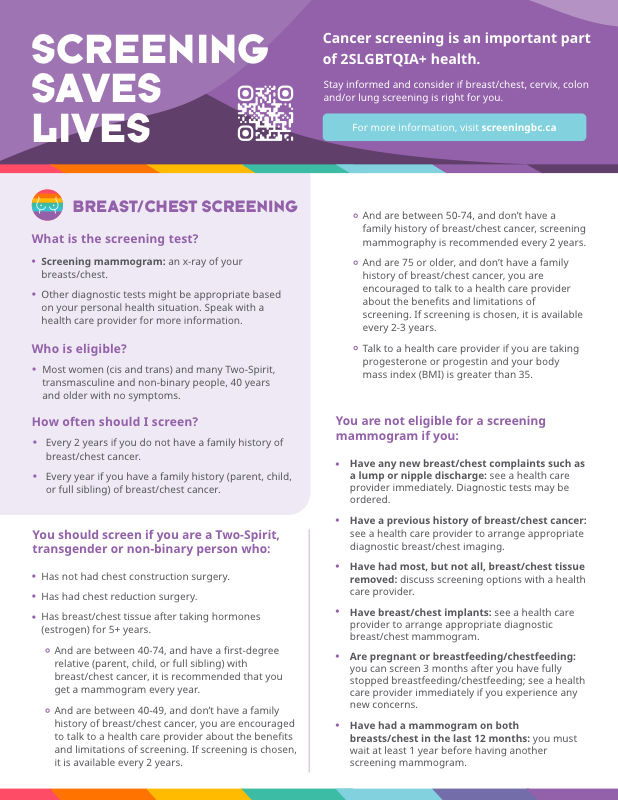

Patient and Provider Materials

Hereditary Cancer
These materials were designed to help patients and providers understand hereditary cancer, genetic testing options, and promote available follow-up care and streamlined referral pathways. Developed for use in clinics and community settings, they help improve understanding, navigation and engagement with BC Cancer's Hereditary Cancer Program.

Inclusive Screening
Created in partnership with Trans Care BC, this gender-inclusive fact sheet offers accessible guidance on BC's cancer screening programs. It supports 2SLGBTQIA+ patients by addressing eligibility, frequency and key considerations.